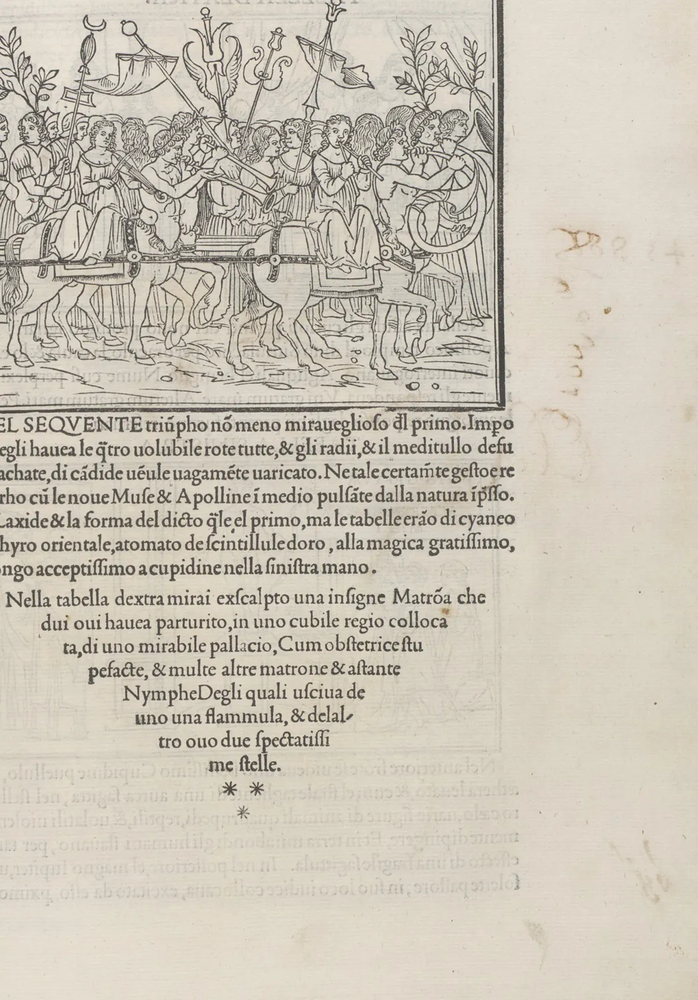

행간과 글줄 길이
넓은 모니터에서 긴 기사를 읽다 보면 한 줄을 다 읽고 다음 줄로 넘어갈 때 같은 줄을 다시 읽거나 한 줄을 건너뛰는 일이 생긴다. 휴대폰에서는 반대로 줄이 너무 자주 끊겨 문장이 토막 난다. 글자를 잘 골라도 줄 사이가 좁거나 한 줄이 너무 길면 글은 읽기 싫어진다. 이 장은 줄과 줄 사이의 거리인 행간, 한 줄의 길이인 글줄 길이, 그리고 글자 크기가 서로 어떻게 맞물리는지를 직접 끌어 보며 익힌다. 그리고 이 분야의 "정답 같은 숫자"들이 어디서 왔고 근거가 얼마나 단단한지 가려 본다.
- 행간, 반행간, 줄 높이(line-height)를 구별하고 em과 비율로 적는다.
- 글줄 길이를 한 줄 글자 수와 em으로 재고, 라틴 글자와 한글의 차이를 계산한다.
- 줄 끝에서 다음 줄 첫머리로 되돌아가는 눈의 움직임으로 행간과 글줄 길이의 관계를 설명한다.
- 한글이 같은 행간에서 라틴 글자보다 빽빽해 보이는 이유를 글자 높이로 설명한다.
- 흔히 쓰이는 권장 수치의 근거 수준(표준, 연구, 관습)을 구별하고 화면별 본문 값을 정한다.
줄 사이의 숨
글줄과 글줄 사이의 거리를 행간(Leading)이라고 한다. 영어 이름은 금속 활자 시절 줄과 줄 사이에 끼우던 얇은 납(lead) 띠에서 왔다. 우리 인쇄소에서는 이 띠를 흔히 "인테르"라고 불렀다. 인테르를 끼우지 않고 활자의 몸끼리 맞붙여 짜는 것을 "솔리드"라고 했고, 인테르를 한 장 끼울 때마다 줄 사이가 그 두께만큼 벌어졌다. 그러니 원래 뜻의 행간은 글자 몸 바깥에 더한 빈 띠의 두께다.
디지털 조판에서는 행간을 보통 두 가지로 적는다. 디자인 프로그램은 "10/14"처럼 글자 크기와 기준선 사이 거리를 함께 적는다(10pt 글자, 기준선 사이 14pt). 웹의 CSS는 line-height로 줄 하나의 높이를 적는데, 단위 없이 1.6이라고 쓰면 글자 크기의 1.6배라는 뜻이다. 어느 쪽이든 결국 같은 양을 가리킨다.
line-height). 16px 글자에 line-height: 1.6이면 \(h\) = 25.6px, 행간은 9.6px, 반행간은 4.8px이다.우리나라 문서 작성 프로그램에서 흔히 보는 "줄 간격 160%" 같은 표기도 비슷한 생각이지만, 프로그램마다 100%의 기준(글자 크기인지, 글꼴이 정한 기본 줄 높이인지)이 달라 같은 숫자라도 CSS의 1.6과 정확히 같지는 않다. 다른 도구로 옮길 때는 숫자만 옮기지 말고 출력해서 기준선 사이 거리를 직접 재 보는 것이 안전하다.
행간을 끌어 보기
아래 문단에서 둘째 줄 기준선의 손잡이를 위아래로 끌면 줄 높이가 바뀐다. 모든 줄이 같은 간격으로 따라 움직인다. 처음 값은 1.25로, 많은 글꼴이 행간을 따로 정하지 않았을 때 쓰는 기본값과 비슷하다.
줄 높이 끌기
세 번째와 네 번째 해볼 것이 행간의 양 끝이다. 줄 사이가 글자 잉크와 겹칠 만큼 좁으면 글자가 엉기고, 줄 사이 빈 띠가 글자 높이에 가까울 만큼 넓으면 줄들이 서로 상관없는 띠처럼 떨어진다. 문단이 하나의 고른 회색 면으로 보이면서도 줄 하나하나를 따라갈 수 있는 구간은 그 사이 어딘가에 있다. 그 구간이 어디인지는 다음 두 가지, 글줄 길이와 글자의 생김새에 달려 있다.
한 줄의 길이
한 줄의 길이를 글줄 길이(Measure, Line length)라고 한다. 길이를 센티미터나 픽셀로 적을 수도 있지만, 읽기에 중요한 것은 한 줄에 몇 글자가 들어가는가이므로 타이포그래피에서는 흔히 한 줄 글자 수(공백과 문장부호 포함)로 말한다. 로버트 브링허스트는 『타이포그래피 스타일의 요소』(The Elements of Typographic Style, 1992)에서 세리프 글꼴로 짠 한 단 본문은 45~75자, 그중 66자 안팎이 흔히 알맞다고 썼다. 이 숫자는 오랜 조판 관습을 정리한 권고이지, 이 범위를 실험으로 증명한 연구에서 나온 것은 아니다.
이 숫자를 한글에 그대로 쓸 수는 없다. 라틴 본문은 공백과 문장부호를 합쳐 한 자의 평균 폭이 글자 크기의 절반 안팎(이 장의 견본으로 재면 약 0.48 em)이지만, 한글은 한 자가 거의 1 em을 차지하고 어절 사이 공백이 끼어 평균이 약 0.68 em이다. 그러니 같은 폭의 줄에 들어가는 글자 수는 한글이 라틴의 70% 남짓이다. 웹 접근성 지침 WCAG 2의 성공 기준 1.4.8(시각적 표현, AAA 등급)도 이 차이를 반영해, 사용자가 고를 수 있게 할 글줄 폭의 상한을 80자, 한중일 글자는 40자로 따로 적었다. 아래에서 단의 오른쪽 끝을 끌어 글줄 길이를 바꿔 본다.
단의 폭 끌기
두 번째 해볼 것에서 라틴 45~75자는 대략 22~36 em이었다. 같은 폭에 한글을 넣으면 30~50자쯤 들어가서, 긴 쪽은 WCAG의 한글 상한 40자(약 27~29 em)를 넘는다. 여기서 한글 본문의 출발점을 하나 얻는다. 한 줄의 폭을 라틴 권고의 짧은 쪽, 곧 20~29 em 안팎에 두면 한글은 줄당 30~40자로 표준의 상한 안쪽에 들어온다. 이것은 연구로 얻은 한글의 최적값이 아니라, 라틴 권고와 표준의 상한을 한글의 글자 폭으로 옮겨 본 계산이다.
되돌아가는 눈
글을 읽는 눈은 줄을 따라 매끄럽게 미끄러지지 않는다. 짧은 도약과 멈춤을 되풀이하며 오른쪽으로 가다가, 줄 끝에서 왼쪽 아래로 크게 한 번 건너뛰어 다음 줄 첫머리로 간다. 이 큰 도약을 되돌아가기(Return sweep)라고 한다. 읽기 연구에서는 이 도약이 다음 줄 첫머리에 정확히 닿지 못하고 조금 모자라게 떨어진 뒤 짧게 바로잡는 일이 흔하다고 보고한다. 줄이 길수록 도약이 길어지고, 줄 사이가 좁을수록 엉뚱한 줄에 떨어지기 쉽다.
이 책은 이 관계를 아주 단순한 기하로 흉내 낸다. 줄 끝에서 다음 줄 첫머리를 겨냥할 때, 위아래로 반 줄 높이 안에만 떨어지면 맞는 줄에 닿는다고 보자. 그러면 허용되는 각도는 다음과 같다.
되돌아가기의 과녁
두 번째와 세 번째 해볼 것을 견주면 이 장의 중심 생각이 나온다. 줄이 길어질수록 행간을 늘려야 하지만, 행간을 늘리는 것만으로는 긴 줄의 불리함을 다 메울 수 없다. 28 em에서 1.8이 주는 각도(약 1.8°)를 100 em에서 지키려면 줄 높이가 6을 넘어야 하는데, 그러면 줄들이 떨어져 문단이 무너진다. 그래서 긴 줄은 행간이 아니라 글줄 길이 자체를 줄여서 고친다.
세 값이 맞물린다
글자 크기, 행간, 글줄 길이는 따로 정할 수 없다. 단의 폭이 정해져 있으면 글자를 키울수록 한 줄 글자 수가 줄고, 글자를 줄이면 줄이 길어진다. 줄이 길어지면 행간을 늘려야 하고, 행간을 늘리면 같은 지면에 들어가는 줄 수가 준다. 아래 지도는 가로가 글줄 길이, 세로가 줄 높이다. 점을 끌어 위치를 옮기면 위쪽 견본이 그 조합으로 짜인다(견본은 지도 폭에 맞게 같은 비율로 줄인다).
글줄 길이 × 행간 지도
지도의 초록 구간은 오른쪽으로 갈수록 위로 올라간다. 긴 줄일수록 더 넓은 행간이 필요하다는 뜻이다. 동시에 구간은 오른쪽 끝에서 위 경계(2.2)에 부딪혀 닫힌다. 어떤 행간으로도 알맞게 만들 수 없는 길이가 있다는 뜻이다. 이렇게 행간과 글줄 길이가 함께 움직여야 한다는 생각은 20세기 전반 미국의 마일스 팅커(Miles Tinker)와 도널드 패터슨(Donald Paterson)이 인쇄물의 읽기 속도를 여러 조건으로 잰 연구에서도 나타난다. 그들은 글자 크기, 글줄 길이, 행간을 하나씩 따로 볼 수 없고 조합으로 봐야 한다고 정리했다(팅커, 『인쇄물의 가독성』(Legibility of Print), 1963에 요약).
근거의 수준
행간과 글줄 길이에는 유난히 "정답 같은 숫자"가 많다. "행간은 150%", "한 줄은 66자" 같은 숫자들이다. 그런데 이 숫자들의 출처는 성격이 저마다 다르다. 표준 문서가 정한 것, 실험으로 잰 것, 오랜 관습을 정리한 것이 섞여 있다. 아래 표는 이 장에서 쓴 숫자들의 근거를 가른 것이다.
| 주장 | 출처 | 근거의 성격 | 주의할 점 |
|---|---|---|---|
| 한 단 본문은 45~75자, 66자 안팎 | 브링허스트(1992) 등 조판 교본 | 관습의 정리(권고) | 라틴 세리프 인쇄 본문 기준. 한글·화면에 그대로 옮길 수 없다. |
| 글줄 폭은 80자(한중일 40자) 이하로 고를 수 있게 | WCAG 2, 성공 기준 1.4.8(AAA) | 표준 | "사용자가 그렇게 바꿀 수 있어야 한다"는 요구. 최적값이 아니라 상한이다. |
| 문단 안 행간은 1.5배 이상 | WCAG 2, 1.4.8(AAA) | 표준 | 같은 기준이 단락 간격도 정한다. AA 등급의 1.4.12는 사용자가 1.5배로 넓혀도 깨지지 않을 것을 요구한다. |
| 화면에서는 긴 줄이 더 빨리 읽히기도 한다 | 메리 다이슨(Mary Dyson) 등의 화면 읽기 실험(1998, 2001) | 실험 연구 | 읽기 속도와 이해도, 선호가 서로 다른 방향을 가리키기도 했다. 스크롤 방식과 과제에 따라 결과가 달라진다. |
| 크기·길이·행간은 조합으로 봐야 한다 | 팅커와 패터슨의 인쇄물 연구(1920~40년대) | 실험 연구 | 오래된 인쇄물·영어 독자 조건. 숫자 그대로보다 "상호작용이 있다"는 결론이 중요하다. |
| 한글 본문은 라틴보다 행간을 넉넉히(대략 1.6~1.8) | 한국 편집·웹 실무 | 관습 | 글꼴의 글자 높이와 크기에 따라 다르다. 연구로 정해진 값이 아니다. |
한글의 행간
같은 줄 높이로 짜도 한글 문단은 라틴 문단보다 빽빽해 보인다. 이유는 글자의 높이에 있다. 라틴 소문자는 대부분 x높이(글자 크기의 절반 안팎) 안에 들어가고, 어센더와 디센더가 있는 몇 글자만 위아래로 뻗는다. 그래서 줄 사이에 실제로 빈 띠가 넓게 남는다. 한글은 거의 모든 글자가 글자 몸의 높이를 꽉 채운다(받침 있는 글자는 특히). 같은 줄 높이라면 줄 사이에 남는 빈 띠가 훨씬 좁다. 아래에서 두 문단을 같은 크기, 같은 줄 높이로 나란히 놓고 비교한다.
같은 행간, 다른 빈 띠
이 계산은 한국의 편집 실무에서 한글 본문에 대개 라틴보다 넉넉한 행간을 주는 관습과 방향이 같다. 다만 셋째 칸의 숫자를 그대로 정답으로 쓰지는 않는다. 라틴 문단은 어센더와 디센더가 줄 사이로 뻗어 실제로는 x높이만큼 시원하지 않고, 한글은 받침이 없는 글자가 섞이면 띠가 조금 넓어진다. 계산은 방향을 알려 주고, 마지막 값은 실제 문단을 실제 크기로 짜 보고 정한다.
line-height는 픽셀 대신 단위 없는 비율로 적어 두는 것이 안전하다. 픽셀로 적으면 독자가 브라우저에서 글자를 키웠을 때 줄 높이가 따라오지 않아 글줄이 겹친다. 한도경은 인쇄소에서 배운 순서를 이렇게 말한다. "크기를 정하고, 인테르를 끼워 보고, 판을 멀리서 본다. 그다음에 줄 길이를 자른다."
작품과 디자인에서: 규칙이 깨질 때
1499년 베네치아의 인쇄업자 알두스 마누티우스가 펴낸 『폴리필로의 꿈 속 사랑의 싸움』(Hypnerotomachia Poliphili)은 초기 인쇄본 가운데 가장 아름다운 책으로 자주 꼽힌다. 이 책은 글줄 길이의 규칙을 일부러 깬다. 아래 그림처럼 문단의 마지막 부분에서 줄을 하나씩 짧게 잘라 본문을 역삼각형이나 잔 모양으로 짰다. 줄이 짧아지는 만큼 낱말이 줄 끝에서 자주 끊기고 읽기는 조금 불편해진다. 대신 지면 위의 글 덩어리가 그림처럼 하나의 모양이 되어, 위의 목판화와 함께 한 장의 구성을 이룬다.

행간의 규칙도 자주 깨진다. 큰 제목은 본문의 비율로 행간을 주면 줄 사이가 지나치게 벌어져 두 줄짜리 제목이 두 개의 제목처럼 보인다. 그래서 큰 제목은 줄 높이를 1.0~1.2 안팎으로, 때로는 글자 크기보다 작게 잡아 위아래 줄을 하나의 덩어리로 묶는다. 시와 노랫말은 반대로 한 줄이 하나의 숨이므로 줄 길이가 들쭉날쭉한 것이 내용이고, 행간을 넉넉히 두어 줄마다 쉼을 준다. 지하철 노선도나 표지판처럼 멀리서 한두 줄만 읽는 글은 글줄 길이 규칙과 거의 상관이 없다.
동아시아의 세로쓰기는 행간과 글줄 길이를 처음부터 다르게 본다. 글줄이 위에서 아래로 내려가고 줄은 오른쪽에서 왼쪽으로 쌓이므로, "행간"은 세로 글줄 사이의 가로 간격이 되고 "글줄 길이"는 단의 높이가 된다. 아래 그림은 같은 글을 가로와 세로로 짠 모습이다. 세로쓰기 책에서 지면을 위아래 두세 단으로 나누어 한 줄을 짧게 하는 방식은 가로쓰기 신문이 여러 단으로 줄을 자르는 것과 같은 이유에서다.
휴대폰과 넓은 화면
이 장의 생각을 모아 서점 소식 글 한 편을 두 화면에 짠다. 아래 작업대에서 화면 폭을 끌어 휴대폰부터 넓은 모니터까지 바꿔 볼 수 있다. 글자 크기, 줄 높이, 최대 글줄 폭(em)을 정하면 그 화면에서 실제로 한 줄에 몇 자가 들어가는지, 되돌아가기 각도가 얼마인지가 바로 계산된다. 화면 양옆에는 휴대폰에서 20px, 넓은 화면에서 32px의 바깥 여백을 둔다.
서점 소식 조판 작업대
휴대폰에서는 글줄 길이를 고를 여지가 거의 없다. 화면 폭에서 양옆 여백을 빼면 그것이 글줄 폭이고, 남은 손잡이는 글자 크기뿐이다. 글자를 키우면 한 줄 글자 수가 줄고, 줄이면 읽기 힘든 작은 글자가 된다. 그래서 휴대폰에서는 글자 크기를 먼저 정하고, 짧은 줄에 맞게 행간을 조금 덜 준다. 넓은 화면은 반대다. 글자 크기에는 여유가 있지만 줄이 끝없이 길어질 수 있으니, 최대 글줄 폭을 먼저 정하고 그 길이에 맞는 행간을 준다.
서윤의 작업 노트
화면 끝까지 가던 줄을 자르다
본문 자간을 정한 다음 날, 서윤은 서점 소식 글을 사무실의 넓은 모니터로 열었다. 브라우저 기본 16px, 행간은 따로 정하지 않은 채 화면 끝까지 이어지는 줄이었다. 이 장의 작업대로 재 보니 1280px 화면에서 한 줄이 106자 안팎이었고, 되돌아가기 각도는 0.5°였다. 서윤 자신도 셋째 문단에서 같은 줄을 두 번 읽었다. 주인은 휴대폰으로 같은 글을 보여 주며 "여기서는 괜찮아 보이는데, 할머니 손님은 자꾸 키워서 보신다"고 했다.
도경은 서윤의 화면 앞에 신문 한 장을 펴 놓았다. "신문은 왜 단을 나눴을 것 같아? 종이가 아까워서가 아니야." 서윤은 두 화면을 따로 정하기로 했다. 휴대폰에서는 양옆 여백 20px을 빼면 360px 화면의 글줄 폭이 320px뿐이다. 글자를 17px로 두면 18.8 em, 한 줄 24자 안팎이 된다. 줄이 짧으니 행간은 1.7(기준선 사이 28.9px)로 두었다. θ는 2.6°다. 넓은 화면에서는 글자를 18px로 키우고, 최대 글줄 폭을 28 em(504px)으로 막았다. 한 줄 37자 안팎으로 WCAG 1.4.8의 한글 40자 상한 안쪽이다. 처음에는 32 em을 생각했지만 계산해 보니 한 줄이 43자로 상한을 넘었다. 줄이 휴대폰보다 기니 행간은 1.8(32.4px)로 조금 더 주었다. θ는 1.8°로, 이 책의 출발 구간 경계(1.5°)보다 크다.
서윤은 한때 넓은 화면의 최대 폭을 40 em까지 풀어 보았다. 한 줄이 55자 안팎이 되고 θ가 1.3°로 떨어졌다. 줄 높이를 2.0으로 올리면 각도는 회복되지만 문단이 성기게 흩어졌다. 서윤은 줄을 자르는 쪽을 택했다. 두 값 모두 line-height는 단위 없는 비율로 적어, 할머니 손님이 글자를 키워도 줄 사이가 함께 넓어지게 했다.
| 화면 | 글자 크기 | 줄 높이 | 최대 글줄 폭 | 한 줄 글자 수 | θ |
|---|---|---|---|---|---|
| 처음 소식(1280px) | 16px | 약 1.3 | 없음(1216px) | 106 | 0.5° |
| 휴대폰(360px) | 17px | 1.7 | 화면 폭 − 40px(320px) | 24 | 2.6° |
| 넓은 화면 | 18px | 1.8 | 28 em(504px) | 37 | 1.8° |
line-height는 단위 없는 비율, 글줄 폭은 em으로 적는다. 자간은 5장의 −0.02em을 그대로 쓴다.핵심 정리
- 줄 높이는 기준선 사이 거리이고, 행간은 줄 높이에서 글자 크기를 뺀 빈 띠다. 웹은 행간을 반씩 글자 위아래에 붙인다. 줄 높이는 글자 크기와 짝으로, 웹에서는 단위 없는 비율로 적는다.
- 글줄 길이는 한 줄 글자 수로 생각한다. 라틴 본문의 45~75자는 관습의 권고이고, 한글은 공백을 포함한 평균 글자 폭이 라틴의 1.4배 안팎이라 같은 폭에 70% 남짓이 들어간다. WCAG 1.4.8은 한중일 글자의 상한을 40자로 따로 적는다.
- 줄이 길수록 줄 끝에서 다음 줄로 되돌아가는 도약이 길어지고 엉뚱한 줄에 떨어지기 쉽다. 긴 줄에는 행간을 더 주지만, 행간만으로 긴 줄을 구할 수는 없다. 긴 줄은 길이를 줄여 고친다.
- 글자 크기, 행간, 글줄 길이는 함께 움직인다. 하나를 바꾸면 나머지를 다시 본다.
- 한글은 글자가 글자 몸 높이를 거의 채워, 같은 줄 높이에서 라틴보다 줄 사이 빈 띠가 좁다. 한글 본문에 행간을 넉넉히 주는 관습은 이 차이와 방향이 같다.
- 권장 수치는 표준, 실험, 관습으로 근거가 다르다. 퍼센트를 옮겨 붙이지 말고 출발 구간을 정한 뒤 실제 독자와 기기로 확인한다.
- 제목, 시, 그림 같은 지면 구성에서는 행간과 글줄 길이의 규칙을 일부러 깨기도 한다. 기준은 읽혀야 하는 글인가, 보여야 하는 모양인가다.
확인 퀴즈
1. 20px 글자에 CSS로 line-height: 1.5를 주었다. 행간과 반행간은 각각 얼마인가?
2. 넓은 모니터에서 본문이 화면 끝까지 이어져 한 줄이 100자 가까이 된다. 이 장의 생각에 가장 맞는 처방은?
3. 같은 크기, 같은 줄 높이 1.5로 짠 라틴 문단보다 한글 문단이 더 빽빽해 보인다. 가장 알맞은 설명은?
4. "한 단 본문은 45~75자"라는 권고에 대한 설명으로 옳은 것은?
출처와 글꼴
- W3C, Web Content Accessibility Guidelines (WCAG) 2.1, 성공 기준 1.4.8 Visual Presentation(AAA), 1.4.12 Text Spacing(AA), 2018.
- Robert Bringhurst, The Elements of Typographic Style, Hartley & Marks, 1992. 글줄 길이 45~75자 권고(요약).
- Miles A. Tinker, Legibility of Print, Iowa State University Press, 1963. 팅커와 패터슨의 인쇄물 읽기 연구 요약(요지만 인용).
- Mary C. Dyson 등, 화면 읽기에서 글줄 길이의 영향에 관한 실험(Dyson & Kipping, 1998; Dyson & Haselgrove, 2001). 결과의 방향만 요약했고 수치는 옮기지 않았다.
- 되돌아가기 각도 θ와 "출발 구간"은 이 책이 교육용으로 만든 모델과 기준이며, 실험으로 맞춘 값이 아니다.
- 그림 2: 메트로폴리탄 미술관 소장 『폴리필로의 꿈 속 사랑의 싸움』(1499), 공공 도메인(CC0).
- 글꼴: Noto Sans KR, Noto Serif KR(Google의 한국어 Noto 글꼴), Inter(Rasmus Andersson). 모두 SIL Open Font License 1.1, Google Fonts로 불러온다.